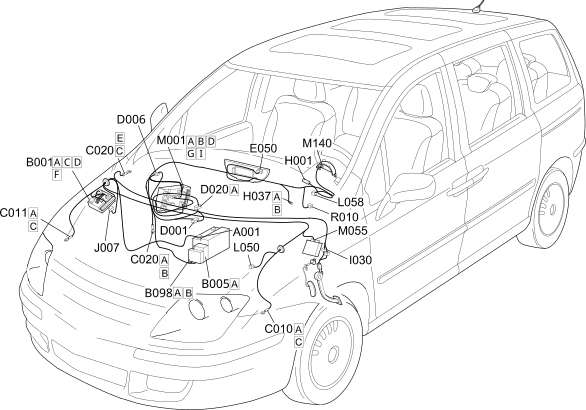

E7050 AUTOMATIC TRANSMISSION COMPONENT LOCATION
- Path
- Electrical equipment > 1 ELECTRICAL FUNCTIONS > E70 VEHICLE ELECTRONIC SYSTEMS > E7050 AUTOMATIC TRANSMISSION > E7050 AUTOMATIC TRANSMISSION COMPONENT LOCATION
- Kind
- topic
- Applies to
- engines: 2.0 16V JTD, 2.2 16V JTD; all production periods; only with equipment: MY 2005
- Interactive page
- https://sloeber94.github.io/elrnDB-fUlss/en/#/179009497
Applies to: engines: 2.0 16V JTD, 2.2 16V JTD; all production periods; only with equipment: MY 2005

Component code | Description | Reference to the assembly |
|---|---|---|
BATTERY | Op. 5530B BATTERY AND LEADS | |
ENGINE COMPARTMENT JUNCTION UNIT | Op. 5505A MULTIFUNCTION COMPONENTS | |
MAXI FUSE BOX | - | |
ADDITIONAL FUSE BOX | - | |
LEFT FRONT EARTH | - | |
RIGHT FRONT EARTH | - | |
PASSENGER SIDE DASHBOARD EARTH | - | |
FRONT/DASHBOARD COUPLING | - | |
FRONT/REAR COUPLING | - | |
DASHBOARD/REAR COUPLING | - | |
INSTRUMENT PANEL | Op. 5,560B ANALOGUE INSTRUMENT PANEL | |
Ignition switch | Op. 5520A IGNITION SWITCH | |
GEAR CONTROLS | - | |
BRAKE PEDAL SWITCH | Op. 5550D BRAKE AND REVERSING LIGHTS | |
GEAR LEVER LOCK ACTUATOR RELAY FEED | - | |
AUTOMATIC TRANSMISSION SOLENOID VALVES | - | |
AUTO. TRANS. LEVER LOCKING SOLENOID | - | |
BODY COMPUTER | Op. 5505A MULTIFUNCTION COMPONENTS | |
AUTOMATIC TRANSMISSION CONTROL UNIT | - | |
WARNING LIGHTS AND MILOMETER CONTROL UNIT (NSO) | - | |
MULTIPLE DIAGNOSTIC COUPLING | - |
Topics linked from this page (21)
- A001 BATTERY
- B001 ENGINE COMPARTMENT JUNCTION UNIT
- B005 MAXI FUSE BOX
- B098 ADDITIONAL FUSE BOX
- C010 LEFT FRONT EARTH
- C011 RIGHT FRONT EARTH
- C020 PASSENGER SIDE DASHBOARD EARTH
- D001 FRONT/DASHBOARD COUPLING
- D006 FRONT/REAR COUPLING
- D020 DASHBOARD/REAR COUPLING
- E050 INSTRUMENT PANEL
- H001 Ignition switch
- H037 GEAR CONTROLS
- I030 BRAKE PEDAL SWITCH
- J007 GEAR LEVER LOCK ACTUATOR RELAY FEED
- L050 AUTOMATIC TRANSMISSION SOLENOID VALVES
- L058 AUTO. TRANS. LEVER LOCKING SOLENOID
- M001 BODY COMPUTER
- M055 AUTOMATIC TRANSMISSION CONTROL UNIT
- M140 WARNING LIGHTS AND MILOMETER CONTROL UNIT (NSO)
- R010 MULTIPLE DIAGNOSTIC COUPLING